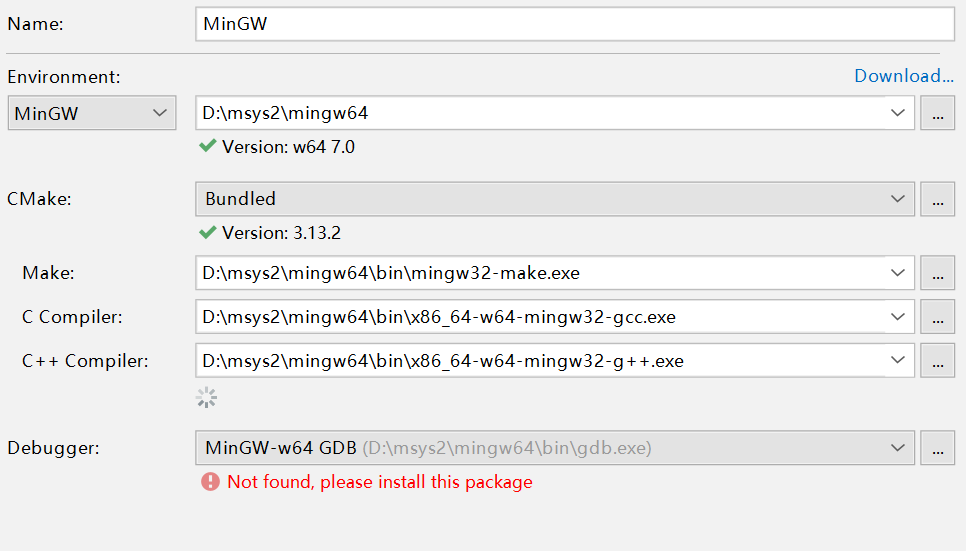

GTKwin配置+Clion IDE配置
环境
- windows 10 x86_64
- msys2
准备GTK官方download指南
- 打开msys2 64位控制台
pacman -S mingw-w64-x86_64-gtk3下载gtk3pacman -S mingw-w64-x86_64-toolchain base-devel下载gcc等编译工具，包含Pkg-config
pacman类似于yum和apt-get的软件包管理工具
下载完毕后设置win环境变量
- 此电脑-属性（R）-高级系统设置-环境变量
- 新增变量
C_INCLUDE_PATH值msys的地址\mingw64\include - 新增变量
LIBRARY_PATH值msys的地址\mingw64\lib - 新增变量
MINGW_HOME值msys的地址\mingw64 PATH变量新增值%MINGW_HOME%\bin
- 新增变量
- 测试是否成功
- 打开powershell或者cmd
- 测试
gcc -v和pkg-config --cflags gtk+-3.0 - 若正确显示版本号和库文件包含即为安装完毕
CLION IDE 配置debug和release
File-Setting-Toolchian 配置如图 
在Setting里选择CMake添加在profiles里添加Release（会自动生成）
修改CMakeList.txt

FIND_PACKAGE 包管理寻找 PKG_CHECK_MODULES 包模块检查 INCLUDE_DIRECTORIES 库路径搜索 LINK_DIRECTORIES 动态链接库搜索 set_target_properties 设置目标属性-只有release下有效 TARGET_LINK_LIBRARIES 生成的文件链接动态库
配置完成即可欢快的写GTK程序了
运行包包装
- 复制
msys2地址\mingw64\bin\*.dll文件 - 复制
msys2地址\lib\gdk-pixbuf-2.0\*文件 - 复制
msys2地址\share\icons\*文件 - 复制的文件目录
./bin ./lib ./share - 将执行文件放于bin中，最后打包在一个文件夹即可